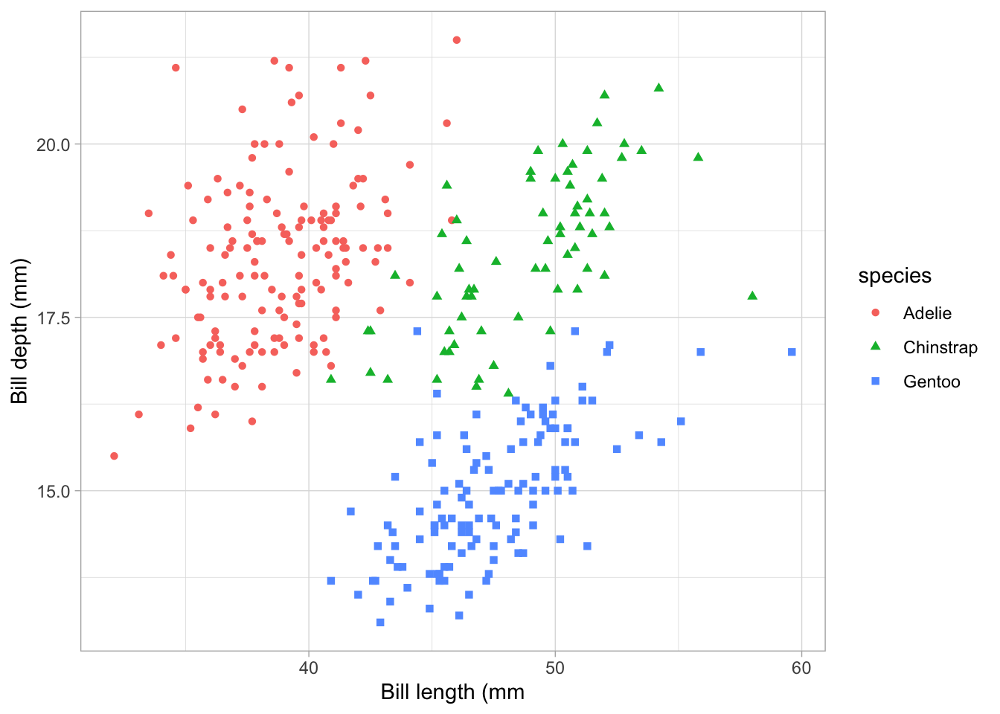

Lorem lobortis etiam cursus ornare viverra; id turpis arcu lobortis arcu per. Magnis sollicitudin viverra euismod mattis nulla natoque, inceptos iaculis sapien. Erat sapien cubilia tristique ultrices eu senectus sociosqu risus eleifend. Cursus vel vel enim fusce, pulvinar ligula1.
Penguin summary
Sit laoreet ante sociis tempor consequat2, vestibulum dis hac metus interdum auctor. Nostra faucibus ad duis interdum! Taciti enim sagittis sagittis ante – curabitur feugiat cursus? Eros fringilla pretium ultricies massa venenatis tempus egestas pellentesque: blandit pretium potenti accumsan arcu nam as listed in Table 1.
Adipiscing nam habitant – tellus mus dictumst nam – velit nisi tempor. Placerat praesent venenatis non curabitur hendrerit accumsan pellentesque congue faucibus. Habitant id volutpat vivamus et lacinia eros arcu venenatis sociosqu tempus? Tortor proin sem sem dapibus consequat cum sem, sodales, venenatis id.
\[E = MC^2 \tag{1}\]
Penguin scientists have long figured out of Equation 1 before Einstein! Lorem inceptos cum magnis conubia – dictumst urna, urna tristique nostra cursus! Litora dictumst cubilia leo – cubilia accumsan suscipit, a ullamcorper sodales aliquam scelerisque! Laoreet suspendisse accumsan nec taciti vestibulum purus, tortor parturient mollis, quisque habitant aliquam. Varius a gravida porttitor blandit habitant.
Bill length and depth
Ipsum eget massa a nam nostra, nostra metus urna ad eget. Vivamus dui lacus iaculis justo nascetur quam ut ornare mollis. Fusce a habitasse fermentum, class vivamus sagittis lobortis per. Luctus diam nostra habitant condimentum cras: sollicitudin nec convallis, integer in tortor potenti quam vel metus elementum in Figure 1.
Figure 1: Penguin bills
Ipsum eget massa a nam nostra, Figure 2 nostra metus urna ad eget. Vivamus dui lacus iaculis justo nascetur quam ut ornare mollis. Fusce a habitasse fermentum, class vivamus sagittis lobortis per. Luctus diam nostra habitant condimentum cras: sollicitudin nec convallis, integer in tortor potenti quam vel metus elementum.

Figure 2: Bill length and depth
PDF report
Elit aliquam dis mattis tortor mattis non, integer luctus facilisis! Diam purus mattis integer, est, primis nisi eget nulla tristique proin gravida cras. PDF link here.
LTER, P. S. A. & Gorman, K. Structural size measurements and isotopic signatures of foraging among adult male and female Chinstrap penguin (Pygoscelis antarctica) nesting along the Palmer Archipelago near Palmer Station, 2007-2009. (2020) doi:10.6073/PASTA/C14DFCFADA8EA13A17536E73EB6FBE9E.